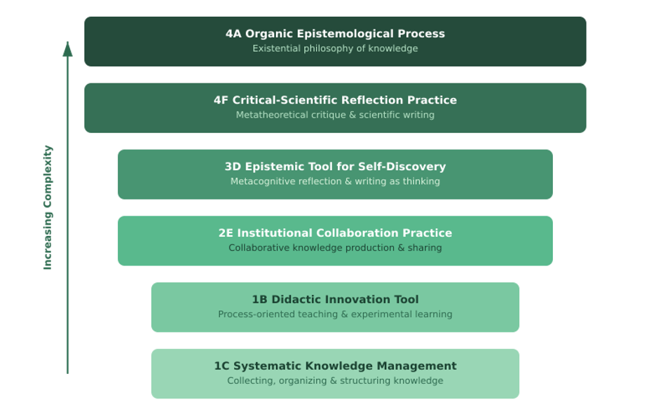

PKM
Heute habe ich auf der ICEDU 2026 in Bali, Indonesien, virtuell einen Beitrag präsentiert — und das Feedback war ausgesprochen ermutigend. Mein Paper trägt den Titel „Knowledge Governance in the Age of GenAI: How Digital Gardening Transforms University Teachers’ Academic Development” und basiert auf meiner Masterarbeit, die ich letztes Jahr an der Universität Hamburg abgeschlossen habe (Arnold, 2025). Es schließt an meine Forschung im Bereich Personal Knowledge Management (PKM) an.
Die zentrale Frage, der ich nachgegangen bin: Wie erleben Hochschullehrende Digital Gardening — nicht als abstraktes Konzept, sondern als gelebte Praxis eigener Professionalisierung? Und was bedeutet das für ihre Fähigkeit, ihr eigenes Wissen im Zeitalter generativer KI eigenverantwortlich zu gestalten?
Ich habe einen phänomenografischen Ansatz gewählt (Marton, 1981), der besonders geeignet ist, die qualitativ unterschiedlichen Arten abzubilden, wie Menschen ein Phänomen erleben. Die Stichprobe war klein, aber bewusst zusammengestellt und bot hinreichende Variation: sechs Experteninterviews mit Lehrenden aus Deutschland, den Niederlanden, Finnland und Italien aus drei Disziplinen — Lehrererbildung, Design Studies und Informatik.
Die Analyse ergab einen Outcome Space (Ergebnisraum) mit sechs Beschreibungskategorien — ein Entwicklungsspektrum vom instrumentellen Gebrauch von DG bis zur existenziellen Philosophie:
Abbildung 1. Sechs Beschreibungskategorien (eigene Darstellung)

Tabelle 1. Kurzzusammenfassung der Entwicklungsstufen (eigene Forschung)
| Kategorie | Niveau | Beschreibung |
|---|---|---|
| 1C | Niedrig | Systematisches Wissensmanagement — DG als Methode zur Organisation und Vernetzung wissenschaftlicher Arbeit |
| 1B | Niedrig | Didaktische Innovation — DG als pädagogisches Werkzeug, das Unvollständigkeit und Prozess normalisiert |
| 2E | Mittel | Institutionelle Zusammenarbeit — DG als Infrastruktur kollektiver Wissensproduktion |
| 3D | Mittel | Epistemische Selbstentdeckung — Schreiben als Denken, ein „Lackmustest” für Verständnis |
| 4F | Hoch | Kritisch-wissenschaftliche Reflexion — PKM-Mythen dekonstruieren, digitaler Fragmentierung entgegenwirken |
| 4A | Hoch | Organischer epistemologischer Prozess — DG als existenzielle Philosophie, ein „Lebensmodell” |
Die zentrale Erkenntnis ist eine Entwicklungslinie: vom Instrument zur Wissensorganisation hin zu einem philosophischen Ansatz. Auf den unteren Stufen nutzen Lehrende digitale Gärten zum Organisieren und Lehren. Auf den oberen wird der Garten zu einer Art des Seins mit Wissen — rhizomatisch, nicht-linear und kritisch verwoben mit den Technologien, die es vermitteln.
Das zentrale Rahmenkonzept des Papers ist die Wissensgovernance-Kompetenz: die Fähigkeit, eigenverantwortliche Kontrolle über die eigenen Wissenspraktiken in KI-vermittelten akademischen Umgebungen zu übernehmen. Das geht über digitale Literalität hinaus. Es bedeutet, GenAI-Outputs kritisch zu bewerten, transparent zu entscheiden, wann und wie kognitive Aufgaben an KI delegiert werden, und eine reflexive Beziehung zu den verwendeten Werkzeugen zu entwickeln.
Digital Gardening, so mein Argument, ist eine der wenigen PKM-Praktiken, die diese Kompetenz auf natürliche Weise fördert. Sie verlangsamt. Sie macht das eigene Denken sichtbar. Sie zwingt dazu, Verantwortung für den eigenen Ideenbildungsprozess zu übernehmen, anstatt ihn auszulagern.
Die Diskussion nach dem Vortrag war inspirierend und brachte einige wirklich gehaltvolle Beispiele aus der eigenen Praxis der Teilnehmenden hervor.
Eine Teilnehmerin berichtete, dass sie KI genutzt hat, um literarische Quellen für ein Buch zu finden, das sie mitverfasst hat — ein konkretes Beispiel für eine aktivierende Lehrpraxis. Dieses Beispiel passte gut zum Digital-Gardening-Argument: Ressourcen zu finden und an einem Ort zu sammeln ist der Kern der Praxis. Wenn man das konsequent, täglich tut, entstehen die Voraussetzungen, aus denen neue Buchideen organisch erwachsen. Es ist nicht nur generative Wissensakkumulation — es auch Kuration.
Es gab auch pointierte Fragen zu Einstiegshürden und erforderlichen Kompetenzen. Ein Teilnehmer fragte, welche Schlüsselkompetenzen für die Teilnahme am Digital Gardening nötig sind und welche Barrieren Teilnehmende in der Praxis erlebt haben. Die pragmatischste Antwort aus dem Plenum: Der erste Schritt ist, ein Tool for Thought zu finden, zu dem man sich wirklich bekennen kann — Obsidian, Tana, Logseq, Roam Research — und damit wirklich vertraut zu werden. Danach kommt die eigentlich schwierige Arbeit: eine persönliche Strategie und Struktur zu entwickeln. Das Werkzeug ist der leichte Teil.
Eine weitere Teilnehmerin berichtete, dass sie KI nutzt, um Lernwebsites für ihre Studierenden zu erstellen — Vibe Coding, im Wesentlichen — ohne Entwicklerin oder IT-Spezialistin zu sein. Das löste eine kleine Nebendiskussion darüber aus, was jetzt für Lehrende möglich ist, die zuvor keinen Zugang zu diesen Fähigkeiten hatten. Es passt gut zu den unteren Kategorien des Ergebnisraums: KI als Instrument, das erweitert, was man organisieren und teilen kann.
Eine theoretisch schärfer gestellte Frage aus dem Plenum: Wie fördert Digital Gardening konkret die Wissensgovernance-Kompetenz — insbesondere die Fähigkeit, Informationen kritisch zu bewerten und in KI-vermittelten Lernumgebungen verantwortliche Entscheidungen zu treffen? Das ist, glaube ich, die richtige Frage, die weiterverfolgt werden sollte. Die Praxis schafft einen langsamen, reflexiven Kontakt mit den eigenen Quellen und dem eigenen Denken. Der Garten denkt nicht für einen — er macht das eigene Denken sichtbar, und das ist die Voraussetzung dafür, es kritisch zu bewerten.
Es gab auch kritische Fragen zur Skalierbarkeit: Phänomenografie mit N=6 ist methodisch angemessen, aber die Befunde sind deskriptiv, nicht kausal. Größere, diversere Stichproben — und Längsschnittstudien, die verfolgen, wie sich Lehrende im Ergebnisraum bewegen — sind die naheliegenden nächsten Schritte.
Wenn Hochschulen es mit der Personalentwicklung ernst meinen, sollten sie Folgendes in Betracht ziehen:
Dies ist eine handgeschriebene Notiz, verfasst am selben Abend, an dem ich den Vortrag gehalten habe. Ich halte das Prinzip der KI-Transparenz für wichtig — deshalb steht hier „80% human”. Ich nutze KI zum Redigieren und Lektorieren meiner Texte sowie für Übersetzungen. Wenn ich KI zum Schreiben einsetze, gebe ich den geschätzten Prozentsatz an.
Es fühlt sich passend an, über Digital Gardening in meinem digitalen Garten zu schreiben, genau an dem Tag, an dem ich darüber referiert habe. Der Garten ist das Argument.
Arnold, M. (2025). Digital Gardening als reflektive Lehrentwicklungspraxis: Eine phänomenographische Analyse des persönlichen Wissensmanagements von Hochschullehrenden [Masterarbeit, Universität Hamburg]. Hamburger Zentrum für Universitäres Lehren und Lernen.
Appleton, M. (2020). A brief history & ethos of the digital garden. https://maggieappleton.com/garden-history
Marton, F. (1981). Phenomenography: Describing conceptions of the world around us. Instructional Science, 10(2), 177–200. https://doi.org/10.1007/BF00132516
Schön, D. A. (1990). Educating the reflective practitioner. Jossey-Bass.
„Little Green” von Joni Mitchell — aus Blue (1971). Nicht die naheliegendste Wahl, aber in der Zeile „Like the color when the spring is born / There’ll be crocuses to bring to school tomorrow” steckt etwas, das einfängt, wonach die Teilnehmenden auf den höchsten Abstraktionsstufen zu greifen schienen: Wissen nicht als zu verwaltende Ressource, sondern als etwas, in das man eingebettet ist. Anhören: Apple Music | Spotify | YouTube